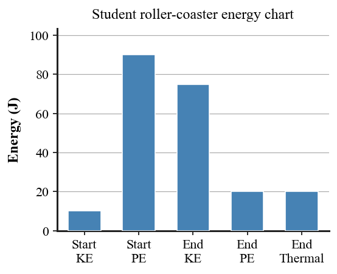

Students will analyze momentum and energy as conserved quantities by explaining impulse, momentum change, collisions, work, power, kinetic energy, potential energy, conservation of energy, energy transfer, and energy use in real-world systems.
| Rung | I Can Statement | DOK | Level |
|---|---|---|---|
| 8 | I can design, defend, or critique a complete momentum-energy model for an unfamiliar real-world system using diagrams, data, equations, conservation laws, and evidence. | DOK 4 | Above |
| 7 | I can compare competing explanations of a collision, energy transfer, or energy-source claim and justify which explanation better fits physics evidence. | DOK 4 | Above |
| 6 | I can connect diagrams, before-and-after models, data tables, graphs, formulas, and written scenarios to explain momentum or energy changes. | DOK 3 | Essential |
| 5 | I can identify and correct misconceptions about momentum, impulse, conservation, work, power, kinetic energy, potential energy, or energy efficiency. | DOK 3 | Essential |
| 4 | I can calculate momentum, impulse, work, power, kinetic energy, potential energy, or simple before-and-after quantities and interpret the answer in context. | DOK 2 | Essential |
| 3 | I can interpret collision diagrams, impulse situations, energy bar charts, work diagrams, and energy transformation models. | DOK 2 | Essential |
| 2 | I can define and recognize key terms such as momentum, impulse, conservation, collision, work, power, kinetic energy, potential energy, and efficiency. | DOK 1 | Essential |
| 1 | I can recognize whether a situation involves motion, collision, energy storage, energy transfer, energy transformation, or energy loss to the surroundings. | DOK 1 | Essential |
Format: 3–5 minute warm-up, quick check, image prompt, vocabulary check, mini-whiteboard response, card sort, energy-transfer sort, or exit ticket
Purpose: Check whether students can recognize basic momentum and energy vocabulary, classify simple systems, and distinguish momentum, impulse, work, power, kinetic energy, potential energy, and conservation.
Complete the statement: Momentum depends on mass and __________.
Name the quantity produced by a force acting over a time interval.
Classify a raised book as having primarily kinetic energy or gravitational potential energy.
A person holds a heavy box motionless. Is mechanical work being done on the box by the holding force if there is no displacement?
Complete the statement: Power is the rate at which __________ is done or energy is transferred.
Name the conservation law used to compare total momentum before and after an isolated collision.
A moving skateboard has which type of mechanical energy: kinetic or gravitational potential?
A machine transfers part of its input energy into thermal energy. Does this violate conservation of energy?
Format: Exit ticket, diagram interpretation, short calculation, ranking task, energy bar chart, collision model, partner check, or whiteboard response
Purpose: Check whether students can apply formulas, interpret diagrams, rank quantities, and connect simple numerical results to the physical meaning of momentum and energy.
A 6 kg cart moves at 4 m/s. Calculate momentum using $p=mv$ and explain what would happen to momentum if the speed doubled.
A 30 N force acts for 0.5 s. Calculate impulse with $J=Ft$ and explain how the impulse relates to a change in momentum.
Two carts in a closed system have total momentum 18 kg·m/s before a collision. Afterward one cart has 11 kg·m/s in the original direction. Determine the other cart’s momentum and explain the conservation assumption.
A 50 N force moves a box 3 m in the direction of the force. Calculate work using $W=Fd$ and explain why direction matters.
A motor does 900 J of work in 6 s. Calculate power with $P=\frac{W}{t}$ and explain what a larger power would mean.
A 2 kg backpack is lifted 5 m. Using $g\approx10\text{ N/kg}$, calculate $PE=mgh$ and explain the energy storage change.
A 4 kg cart moves at 3 m/s. Calculate $KE=\frac12mv^2$ and explain why doubling speed has a larger effect than doubling mass.
Compare two stopping methods for the same moving cart: one stops it in 0.2 s and one in 1.0 s. Without changing $\Delta p$, explain which requires the smaller average force and why.
Format: Constructed response, misconception analysis, CER, ranking explanation, diagram critique, graph explanation, gallery walk, or group whiteboard defense
Purpose: Check whether students can reason strategically, explain cause and effect, connect multiple representations, and correct common misconceptions about momentum and energy.
A student says, “A safety airbag works because it reduces the passenger’s change in momentum.” Critique the statement using impulse, force, and contact time.
Define a system for two carts that collide. Explain why internal collision forces can be large while total system momentum remains conserved when external impulse is negligible.
A student says, “When a rolling ball stops, its energy is gone.” Explain the misconception and trace where the energy can go.
A machine makes lifting easier by using a smaller force over a longer distance. Explain why this does not create extra energy.
A roller coaster loses mechanical energy because of friction. Explain how total energy can still be conserved.
Compare two objects with the same momentum but different masses. Explain how their speeds must differ and how their kinetic energies may differ.
A student says, “Power and energy are the same because both are measured in joules.” Analyze the statement and correct the units/concepts.
A claim says solar panels create energy from nothing. Rewrite the claim using energy-source and energy-transformation language.
Format: Performance task, extended response, investigation reflection, modeling task, critique task, engineering analysis, or strategy defense
Purpose: Check whether students can synthesize collision data, energy diagrams, formulas, system definitions, and real-world evidence in unfamiliar momentum-energy situations.
A cart collision produces before-and-after mass and velocity data. Describe the calculations and system definition you would use to decide whether momentum was conserved, and identify one likely source of experimental mismatch.
Design a short investigation showing how stopping time affects force for the same momentum change. Include what you would vary, measure, and compare.
A helmet design uses a rigid inner surface; a second uses compressible padding. Recommend one using impulse and energy ideas, and explain one tradeoff.
The roller-coaster energy chart below shows total energy increasing while the car descends. Critique the chart and describe a corrected energy accounting that includes thermal energy if needed.

A company claims a machine produces more work output than energy input. Evaluate the claim using energy conservation and describe evidence that would be needed to test it.
Compare regenerative braking with ordinary friction braking. Build an energy-transfer model for each and explain what “recapturing energy” does and does not mean.
Choose two energy sources for a school and recommend one using at least four criteria such as reliability, availability, efficiency, and environmental impact. Tie the comparison to energy transformations.
A toy car rolls down a ramp and collides with a cart. Explain what a momentum analysis can reveal, what an energy analysis can reveal, and why the two approaches are not interchangeable.